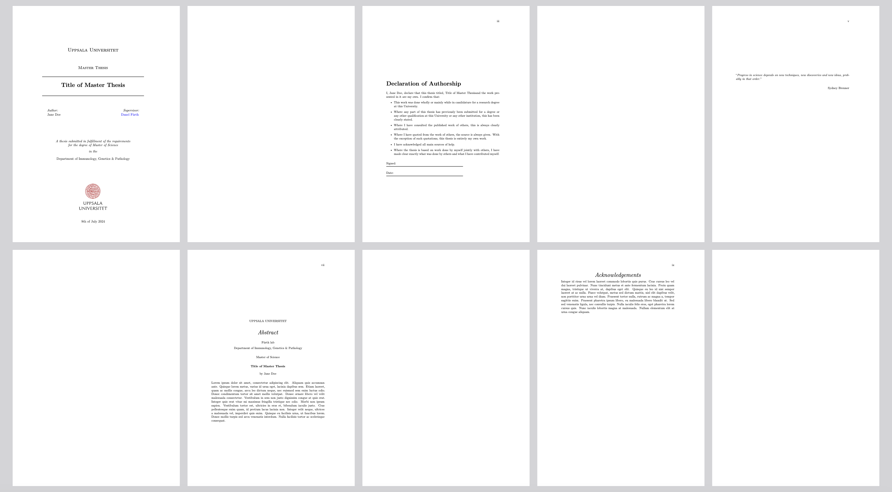
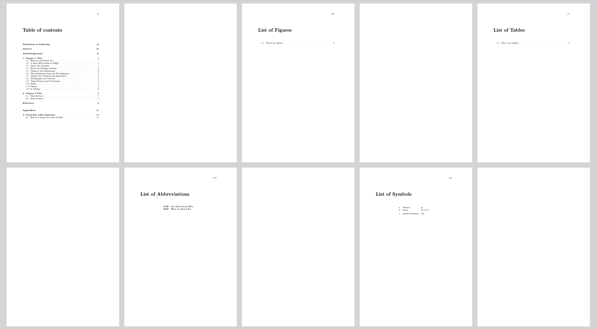
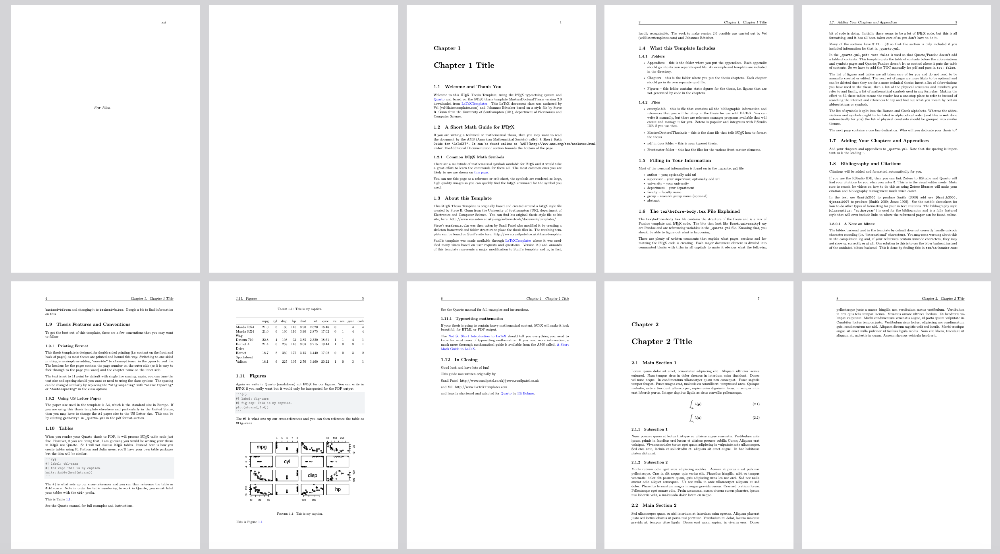

Master thesis template in Fürth lab
Quarto template to create your master thesis.



Quick Start!
- Show me how to download a zip and open in RStudio: Video
- Show me how to use this repo as a template and then clone to my computer with RStudio: Video
- Show me how to render in Visual Studio Code (see previous videos for how to get the repo onto your computer): Video
- Scroll to the bottom for information on customizing the look of your thesis.
Installing the extension
You will need to do this to get all the folders with tex files. Start in the directory where you will create the directory that will contain your thesis files. Run this from a terminal in that directory.
quarto use template furthlab/thesis_templateIt will ask for an empty directory name where to put the files, give it a new directory name.
Once you do that you can cd to the new directory and render from within the directory.
quarto renderInstallation or updating for an existing document
You may also use this format with an existing Quarto project or document. But you will need to have all the tex folders already (see above).
quarto install extension furthlab/thesis_templateUsage
Customizing the look
For a LaTeX document, the class file MasterDoctoralThesis.cls in the _extensions/quarto-thesis determines the look and LaTeX environments available. To make any changes to the layout, change the MasterDoctoralThesis.cls **in the _extensions folder**. The MastersDoctoralThesis.cls file in the main folder will be overwritten by the one in the _extensions folder when you re-rerender. To get info on the MasterDoctoralThesis document class, do a web search for MasterDoctoralThesis.cls. You’ll find some documentation.
Adding content
- start adding Chapters in qmd format to the Chapters folder.
- then add the chapter (or appendix) to the
_quarto.ymlfile
Getting and giving help
First try the Discussion link because there may be a solution there. Have a solution to post or want to show how you have used this template? Post to the discussion forum too! You’ll find links to other Quarto thesis templates there too.
If you think it’s a bug, then definitely post an issue and I’ll look into it!
Contributors
This template is based on the Masters/Doctoral Thesis, LaTeX Template, Version 2.5 (27 Aug 2017).
As well as: nmfs-opensci/quarto-thesis
Problems
All the stuff in Frontmatter is mandatory LaTeX since it is being injected into the tex document after the qmd is processed. Probably need to learn how to write a lua filter to render the Frontmatter qmd to LaTeX via Pandoc.
I doubt that passing in
classoptionsin your_quarto.ymlwill work. The elsevier lua filter suggests that the classoptions need to be added on.Why does
index-blx.bibkeep appearing?
Warning. Chapter 1 has R code
Python and Julia users: After you install the extension, search for {r} in Chapters/Chapter1.qmd and get rid of the R code (for a table and a figure) or replace with Python or Julia code.